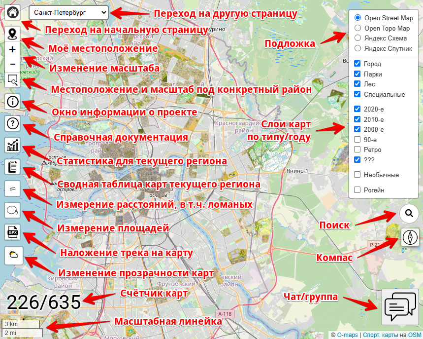
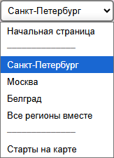
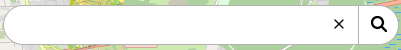
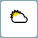
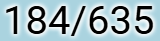
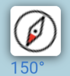
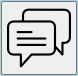
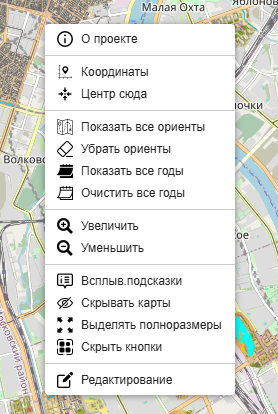

Каждый из разделов с картами
(Санкт-Петербург, Москва, Белград и все регионы вместе)
представляет из себя картографическую подложку с "привязанными" к ней изображениями спортивных карт.
Щелчком мыши по любой карте можно вызвать появление всплывающего окна с подробной информацией о ней.
Каждый из разделов с картами
(Санкт-Петербург, Москва, Белград и все регионы вместе)
представляет из себя картографическую подложку с "привязанными" к ней изображениями спортивных карт.
Щелчком мыши по любой карте можно вызвать появление всплывающего окна с подробной информацией о ней.
Все карты организованы в группы (слои) по типу и по году издания. Все такие слои можно включать/выключать независимо друг от друга.
Помимо собственно карт на экране расположено множество разнообразных элементов управления - кнопки, списки выбора, ссылки и пр.
В левой нижней части экрана расположен счётчик показываемых карт.
Подложка
 Самый "нижний" слой на экране - это картографическая подложка. Для неё могут использоваться различные источники:
Самый "нижний" слой на экране - это картографическая подложка. Для неё могут использоваться различные источники:
- Open Street Map (OSM)
- Open Topo Map (OSM)
- Яндекс карты (Схема)
- Яндекс карты (Спутник)
Слои карт
 Спортивные карты по типу бывают:
Спортивные карты по типу бывают:
- Городские (CITY)
- Парковые (PARK)
- Лесные
- Специальные
- Рогейн (ROGAINE)
- Необычные (FUN)
Спортивные карты по году издания делятся на десятилетия:
- 2020-е
- 2010-е
- 2000-е
- 90-е
- Ретро
- ???
Слои (типы) карт можно включать/выключать независимо друг от друга с помощью галочек (чекбоксов) в правой части экрана.
Всплывающее окошко информации о карте
 Каталог может хранить множество разной информации о каждой карте:
Каталог может хранить множество разной информации о каждой карте:
- Название
- Год
- Координаты углов карты для "привязки"
- Имя файла для предварительного просмотра
- Имена файлов изображений карты в высоком (ну или в не очень высоком) качестве
- Список авторов
- Список владельцев
- Список типов (слоёв)
- Указание на многодневку или серию соревнований
- Ссылка на GPS-трансляцию
- Логотип
- Любая дополнительная информация
Помимо всего перечисленного, во всплывающем окошке информации о карте показывается следующие элементы:
- Площадь карты
- Ссылка на карту
- Ссылка на страничку информации о карте
- Кнопка "Скрыть эту карту"
Площадь карты может быть или заранее прописана в каталоге, или вычислена "на лету". Вычисление происходит на основе координат углов карты. Поскольку у нас нет никакой информации о том, какую часть листа бумаги занимает собственно карта, то используется такое условное правило - (площадь листа * 70%).
"Ссылка на карту" - это ссылка на O-maps, который будет открыт именно на этой карте.
Страничка информации о карте во многом дублирует это окошко информации, разве что в другом дизайне. Но у неё есть постоянный адрес, который можно кому-то послать или где-то упомянуть, если это вдруг будет нужно. Найти её можно на "скрепке" справа от названия и площади карты.
Кнопка "Скрыть эту карту" может быть очень полезна, когда в одном месте расположено множество карт, перекрывающихся друг с другом. Т.о. можно добраться до самых "глубоко закопанных" карт.
Элементы управления

Навигация по сайту
 Для перехода на начальную страницу, на страницы другого региона или на страницу стартов можно использовать всплывающее меню в верхней левой части экрана. Для перехода на начальную страницу существует также отдельная кнопка - самая левая-верхняя.
Местоположение и масштаб
Кнопка "Моё местоположение" сдвинет карту в то место, где Вы находитесь. Но только, если определение местоположения разрешено в настройках Вашего браузера.
Кнопки "+" и "-" ступенчато увеличивают и уменьшаю масштаб карты.
Кнопка "Ограничить область" сдвинет карту и изменит масштаб в соответствии с выделенным районом.
Информационные ресурсы
Кнопка "О проекте" открывает окно с краткой информацией о проекте - его общее описание, задачи, структура, способы поддержки. А также благодарности и обращения к авторам и владельцам карт.
Кнопка "Справка" переносит на страницу с этой документацией.
 Кнопка "Немного статистики" ведёт на страницу статистики для текущего региона.
Кнопка "Немного статистики" ведёт на страницу статистики для текущего региона.
Кнопка "Сводная таблица карт" открывает соответствующую страницу для текущего региона.
Инструменты измерения
Кнопка "Измерение расстояний" запускает инструмент позволяющий измерить длину дистанции или любой ломаной линии на местности.
Кнопка "Измеритель площади" позволяет измерить площадь произвольного участка местности с помощью инструмента, похожего на лассо.
Поиск
 Инструмент поиска позволяет быстро найти карту по её названию, имени файла, году издания или даже по любому слову, встречающемуся в её описании.
Прочее
 Инструмент "Просмотр GPX/KML/GeoJSON" даёт возможность наложить трек из файла соответствующего формата на карту.
Инструмент "Просмотр GPX/KML/GeoJSON" даёт возможность наложить трек из файла соответствующего формата на карту.
 Ползунок "Прозрачность карт" меняет её от 0 до 100%, оставляя подложку неизменной.
 Счётчик карт показывает число карт, поместившихся в экран и общее их количество. Если эти два числа совпадают, то показывается только одно.
 Компас при правильно откалиброванном встроенном компасе телефона должен реально показывать на север. Но не стоит относиться к нему слишком серьёзно.
 Большая кнопка "Группа поддержки" в правом-нижнем углу экрана открывает телеграм-чат проекта. Там Вы можете узнать все связанные с ним новости и задать любые возникшие у Вас вопросы.
Всплывающее (контекстное) меню
 Меню вызывается кликом правой кнопкой мыши по карте (или долгим "тапом" по ней на телефоне).
Пункты меню:
- "О проекте" - окно с краткой информацией о проекте.
- "Координаты" - копирует координаты точки появления меню в буфер обмена.
- "Центр сюда" - перемещает карту в точку появления меню.
- "Показать все ориенты" - включает слои всех типов спортивных карт.
- "Убрать ориенты" - выключает все слои спортивных карт.
- "Показать все годы" - включает все слои временнЫх интервалов (2020-е, 2010-е итд).
- "Увеличить" - приближает карту.
- "Уменьшить" - удаляет карту.
- "Всплыв.подсказки" - включает/выключает автоматический показ всплывающего окошка с информацией о карте при наведении курсора на неё.
- "Скрывать карты" - включает/выключает режим, при котором карты временно скрываются с экрана при перемещении подложки. Иногда (когда на экране много карт) это заметно повышает производительность.
- "Выделять полноразмеры" - включает/выключает режим, при котором карты, у которых есть качественный джипег, выделяются специальным пунктирным обрамлением.
- "Скрыть кнопки"/"Показать кнопки" - выключает показ большинства элементов управления (кнопок) или возвращает их обратно.
- "Редактирование" - выключает/выключает режим редактирования (привязки карт).
Параметры запуска
Страницы с картами или со сводными таблицами карт любого из регионов (СПб, Москва, Белград, все вместе) можно открыть в сециальном режиме путём добавления специальных параметров к адресу страницы. Ниже - таблица с описанием возможных параметров:
| Параметр | Описание | Пример использования |
|---|---|---|
| map | Параметр map в адресе указывает на конкретную карту. O-maps откроется с заданной картой в центре. | https://o-maps.spb.ru/spb.html?map=petropavlovka_2024 |
| onlymap | Параметр onlymap подобен предыдущему, но показана будет ТОЛЬКО выбранная карта. Все остальные не будут загружены. | https://o-maps.spb.ru/spb.html?onlymap=petropavlovka_2024 |
| x, y, zoom | Параметры x, y и zoom задают центральную точку и степень приближения карты (9 - 16). | https://o-maps.spb.ru/moscow.html?x=55.75163&y=37.61688&zoom=15 |
| no-buttons | Если присутствует параметр no-buttons, с карты будут убраны все "лишние" элементы управления. | https://o-maps.spb.ru/spb.html?no-buttons |
| embedded | Это "усиленный" вариант предыдущего параметра. С карты будут убраны все элементы управления, кроме кнопок зуммирования. Он очень удобен при
интеграции карты O-maps на страницу стороннего сайта. Дополнительный нюанс - в этом режиме в качестве подложки используются Яндекс-карты вместо OSM (т.к. OSM бывает заблокирован). |
https://o-maps.spb.ru/spb.html?embedded |
| author | Параметр author указывает, что будут загружены карты лишь одного указанного автора. Список всех авторов можно посмотреть тут. | https://o-maps.spb.ru/all.html?author=TKMKV_K |
| owner | Параметр owner указывает, что будут загружены карты лишь одного указанного правообладателя. Их полный список можно посмотреть тут | https://o-maps.spb.ru/moscow.html?owner=O_FRZNO |
| type | При наличии параметра type будут загружены карты лишь одного указанного типа (PARK, ROGAINE, SPRINT, CITY, RELIEF, WINTER, VELO, FUN). | https://o-maps.spb.ru/sheet-serbia.html?type=PARK |
| start | При наличии параметра start будут загружены карты лишь одной указанной многодневки (серии стартов). Список всех стартов можно посмотреть тут. | https://o-maps.spb.ru/sheet-spb.html?start=KKP |
| only-wo-author | При наличии параметра only-wo-author будут загружены лишь те карты, автор-составитель которых неизвестен. | https://o-maps.spb.ru/all.html?only-wo-author |
Практически все параметры можно комбинировать (использовать одновременно). Например, такой адрес https://o-maps.spb.ru/all.html?author=TKMKV_K&x=59.99791&y=30.26149&zoom=13&type=PARK&embedded соотвествует O-maps-странице всех регионов вместе, на которую будут загружены только парковые карты Константина Токмакова, причём указаны конкретные точка позиционирования и степень приближения, а также включён режим embedded.